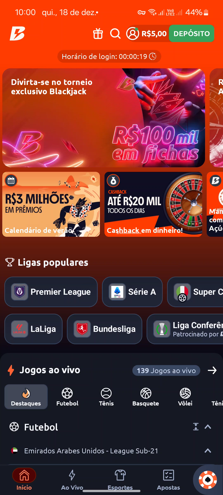
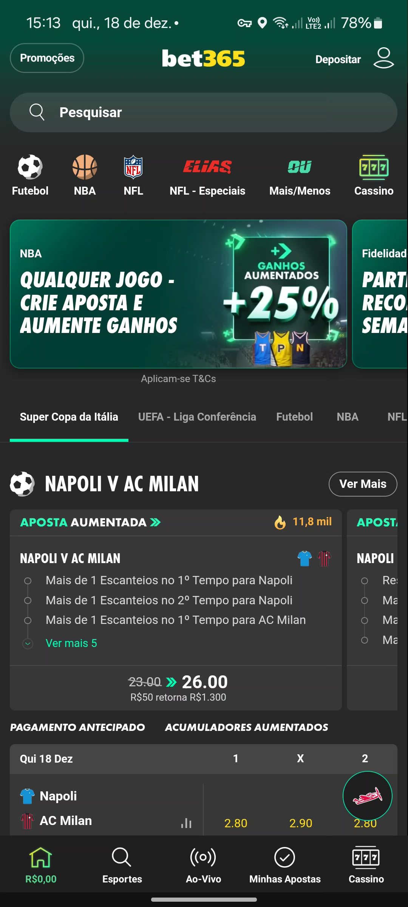
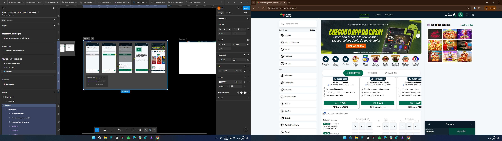

Saída responsável: pausa e autoexclusão sob as regras da SPA/MF
Reconstrução da jornada de afastamento com pausa temporária, autoavaliação voluntária e autoexclusão definitiva em 3 etapas sem labirinto de menus.

1. O Problema
Em abril de 2025, já sob as regras de jogo responsável da SPA/MF, a única saída da plataforma era um botão "Fechar conta" com o aviso "esta ação é irreversível". Não havia pausa temporária nem encaminhamento para apoio, então quem queria se afastar por um tempo só podia se excluir de forma definitiva. O ticket #1992, aberto pela PM Tamille Rocha em 29/04/2025, pediu a adequação do fluxo.
2. Intervenção de Design & Benchmark
No painel de Jogo Responsável, a pausa temporária de 1, 7 ou 30 dias aparece primeiro e a autoexclusão definitiva fica logo abaixo, na mesma tela, sem submenu. A autoexclusão leva três etapas: pedir a exclusão, ler os efeitos (bloqueio de apostas, saque do saldo e canais de apoio) e confirmar com a senha, para impedir que outra pessoa exclua a conta num aparelho compartilhado.
A autoavaliação baseada no CPGI é um link opcional, nunca uma etapa obrigatória. A v1 tinha um texto persuasivo e ilustrações emotivas, e a supervisão de design (Luedy Costa) reprovou essa versão em 07/07/2025 porque ela soava como retenção disfarçada. A v2, aprovada em 10/07, trocou isso por texto factual e cores neutras.
Auditoria de Benchmark & Limites de Provedor:
- No benchmark, os operadores analisados exigiam de 4 a 5 níveis de menu para chegar à autoexclusão (padrão obstrutivo).
- Como a API do provedor exige login vinculado ao CPF, quem está deslogado encontra na tela de login um atalho para o chat de suporte 24h, onde pode pedir a exclusão a um atendente.
3. Decisões Estratégicas de Interface
A. Pausa e Autoexclusão na Mesma Tela (Sem Submenus)
A pausa temporária (1, 7 ou 30 dias) fica no topo e a autoexclusão logo abaixo. Diferente dos operadores que escondiam a saída em 4 a 5 níveis de menu, o encerramento ficou a um scroll de distância.
B. Autoexclusão Definitiva em 3 Etapas Transparentes
1. Pedido no painel; 2. Esclarecimento sóbrio dos efeitos legais (saque do saldo remanescente e canais de ajuda); 3. Confirmação por senha para segurança em dispositivos compartilhados.
C. Neutralidade Verbal e CPGI Opcional (v2)
Rejeição da v1 persuasiva após veto de design. Adoção de linguagem estritamente neutra e factual, sem ilustrações emotivas, com o questionário de autopercepção CPGI como link voluntário, nunca como barreira.
4. Resultados e Limites de Atribuição
O fluxo foi validado por Compliance (Hans Schleier), Produto (Diego Batista) e Conteúdo/Jurídico (Priscila Santiago e Natália Gomes), e foi para staging em 28/07/2025. Não acompanhei a entrada em produção, porque o meu ciclo no ticket #1992 terminou nessa homologação.
Não houve teste A/B, por escolha ética: testar variantes de interface para ver qual faz menos pessoas saírem seria manipular usuários em momento de vulnerabilidade. Não houve teste de usabilidade, e não tenho dado de uso.
Em produção, eu acompanharia a proporção entre pausa e autoexclusão, quantas pessoas voltam depois da pausa, o tempo para concluir uma exclusão e os pedidos feitos pelo suporte, sem meta de reduzir exclusões.
5. Telas em Alta Fidelidade (Proteção do Jogador)
Telas reais desenhadas para mobile-first (1080×2400) com cálculo de P&L, controles de limite diário, semanal e mensal, e conformidade de contraste WCAG AA:

Definição de limites de depósito (diário, semanal e mensal) com prevenção contra apostas impulsivas.
Hierarquia invertida: pausa temporária graduada (1, 7 ou 30 dias) como acolhimento primário.

Controle estrito de perdas líquidas (Apostas vs Ganhos) conforme Portaria SPA/MF nº 1.231.

Autoexclusão definitiva com modal de confirmação e fricção de segurança de 24 horas.
Configuração de tempo máximo de sessão diária com notificações de alerta e bloqueio preventivo.

Feedback de confirmação transparente com data de término e canal de apoio psicológico.